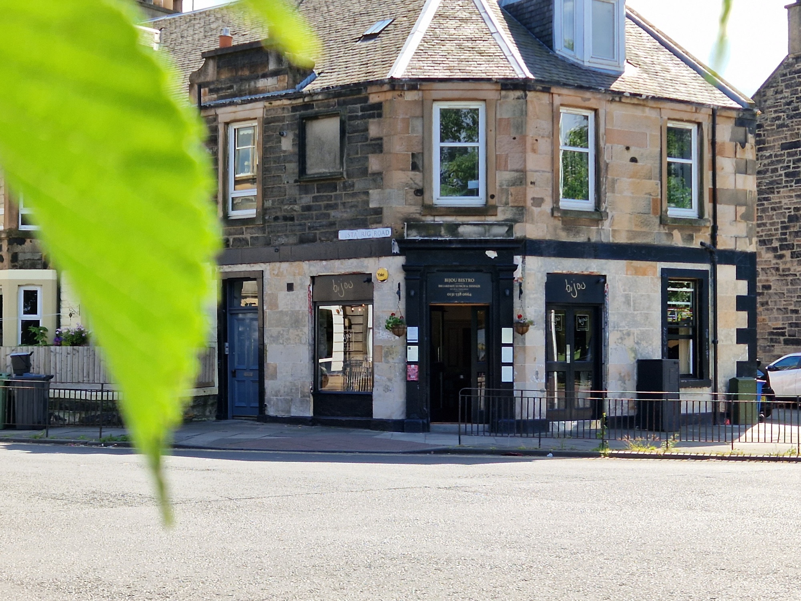
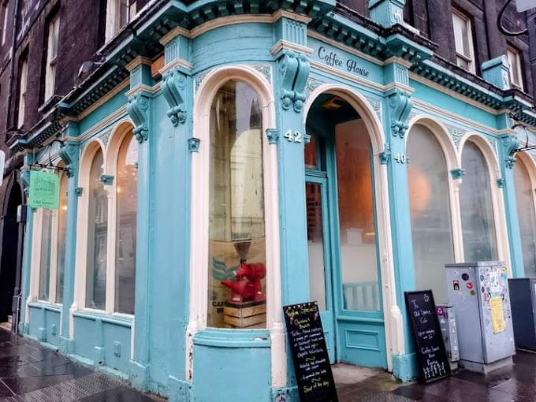
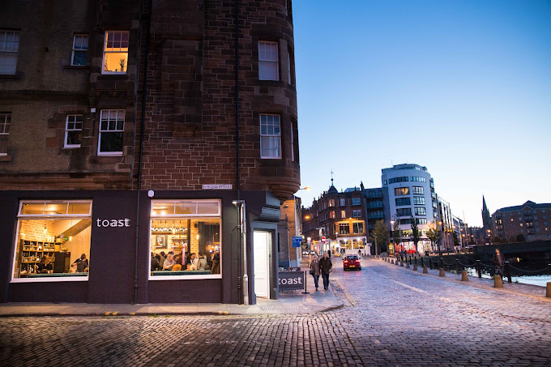

Cafes & Restaurants

Bijou 'on the links' bistro
A friendly and cosy restaurant on the corner where Restalrig becomes Leith Links.
- Phone: 0131 538 0664

The Old Spence
The Old Spence is a cosy cafe serving specialty coffee, teas, homemade focaccia for the daily lunch offering, homemade soups, and traditional brunch.
- Phone: 0131 555 5289

The Old Spence
Busy spot serving cafe fare, lattes and cocktails in a snug, brick-lined space with pavement seats.
- Phone: 0131 467 6984